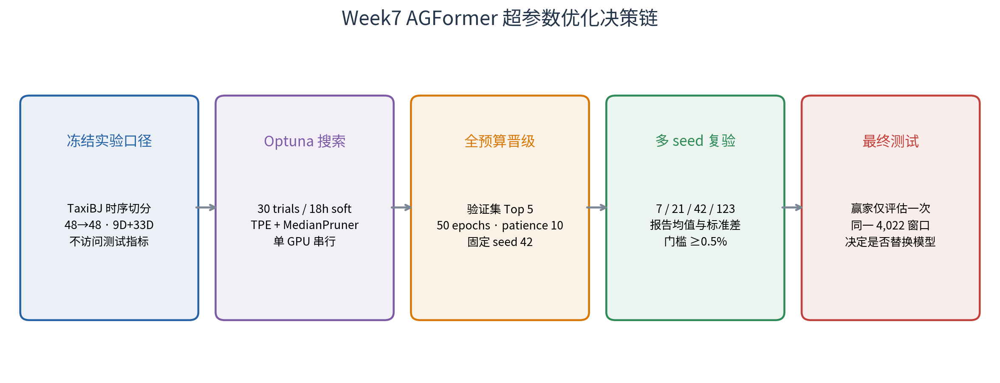

方案结论： 保持 Week4 最终模型的数据规则、特征集合和测试窗口不变，使用 Optuna TPE 在固定验证集上搜索学习率、批次、隐藏维度、注意力头数等 9 组参数。整个 study 的总预算为 30 trials / 自首次启动起 18 小时软墙钟目标，单 GPU 串行运行并启用 MedianPruner、早停、显存门禁和 SQLite 状态恢复。搜索与全预算晋级均不构建测试 Dataset；四随机种子确认胜出后，只有显式
--run-final-test才会访问一次测试集。
优化对象是当前最终预测模型，而非重新比较模型家族：
| 项目 | 固定值 |
|---|---|
| 模型 | AGFormer，gated 时间/静态上下文，parallel linear residual head |
| 数据 | TaxiBJ，32×32=1,024 节点，真实时间戳，gap-aware 连续窗口 |
| 输入/输出 | 48 个历史半小时步 → 48 个未来半小时步（24 小时） |
| 动态输入 | inflow/outflow + 7 维时间/日历，共 9 维 |
| 静态输入 | 33 维无泄漏节点特征 |
| 图结构 | 单 spatial graph + adaptive adjacency |
| 当前 seed42 基线 | checkpoint epoch 22，验证 avg MAE 17.3917 |
| 已知测试参考 | seed42 avg MAE 16.1132；四 seed ensemble avg MAE 15.9030 |
主目标为固定验证集上、全部 48 个预测步和所有非零真实流量位置的反归一化平均绝对误差：
objective = masked_MAE(pred × std + mean, true × std + mean)
Optuna 的方向为 minimize。搜索阶段额外记录 train loss、参数量、训练时长和峰值显存作为诊断信息，但不组成加权目标；RMSE/MAPE 只在获得明确授权的最终测试中计算，避免改变项目一直使用 MAE 作为主指标的口径。
| 参数 | 搜索范围 | 分布/约束 | 设计理由 |
|---|---|---|---|
lr |
0.0002–0.002 | 对数均匀 | 覆盖当前 1e-3 附近一个数量级 |
batch |
[4, 8] | categorical | 只允许已知安全的 4/8，不冒险并发或 batch 16 |
d_model |
[24, 32, 48, 64] | categorical | 同时探索更小与更大表示容量 |
n_heads |
[2, 4, 8] | categorical | 运行时强制 d_model % n_heads == 0 |
d_ff |
d_model × [2, 3, 4] |
条件派生 | 保持 FFN 宽度与隐藏维度成比例 |
num_layers |
[1, 2, 3] | categorical | 检查 1–3 层的容量/过拟合权衡 |
dropout |
0.05–0.25 | 步长 0.05 | 调整正则化强度 |
weight_decay |
1e-06–0.0005 | 对数均匀 | 搜索 AdamW 正则化尺度 |
embed_dim |
[8, 10, 16] | categorical | 调整 adaptive adjacency 节点嵌入容量 |
城市、时序切分、T_in/T_out、真实时间编码、gap filtering、9 维动态输入、33 维静态特征、single spatial graph、gated fusion、linear residual head、Huber loss、AdamW 和指标掩码规则全部冻结。天气、周期滞后、多图、future decoder context 等特征不进入本轮搜索，因为它们会混淆“超参数优化”和“特征/架构消融”。

--run；n_jobs=1 被代码强制，禁止多个 trial 同时占用 GPU。history.jsonl 和最佳 checkpoint，Optuna 状态保存到 SQLite；重启后继续剩余总预算，而不是重新获得 30 trials/18 小时；排除主动入队的 incumbent 后，按验证 MAE 选择 Top-5 challengers，自动导出带 optimization_validation_only=true 的 YAML，并额外导出 incumbent_control.yaml。这些配置会被通用 scripts/train.py 主动拒绝，只能通过专用 train_optuna_promotion.py --run-promotion 训练；该入口仅构建 train/validation。候选与 control 都用 seed=42、50 epochs、patience=10 在同一环境重训。只有相对同轮 incumbent control 至少改善 0.5% 才晋级多 seed；按历史 checkpoint 估算，对应验证 MAE 约低于 17.3047，正式判断以同轮 control 为准。
晋级配置使用 seeds [7, 21, 42, 123] 复验，报告验证 MAE 的 mean±std。确认收益稳定后，使用独立 evaluate_optuna_final.py --run-final-test 门禁，才会构建与现有模型完全相同的 4,022 个测试窗口并评估 checkpoint；同一 checkpoint 已存在 final_test_metrics.json 时会拒绝重复测试。若验证收益不足 0.5%、跨 seed 方差覆盖收益，或最终测试 MAE 未改善，则保留现有最终模型。
| 风险 | 代码措施 | 结果处理 |
|---|---|---|
| GPU OOM | batch 仅 4/8、参数量上限 2.0M、trial 后清 CUDA cache | OOM 标记为 pruned，不中断整个 study |
| Windows/WSL 重启 | SQLite 状态 + 首次启动时间 + 已消费 trial 计数 | 继续剩余 study 总预算；中断 RUNNING trial 计入预算 |
| 配置或数据漂移 | config/data/code SHA-256 protocol fingerprint | 同名 study 指纹不一致时拒绝恢复 |
| checkpoint 覆盖 | trial_XXXX/best.pt 独立路径 |
非最佳 trial 仅删除大 checkpoint，保留 config/history/SQLite |
| 测试泄漏 | objective 只构建 train/validation Dataset | trial 排名中没有 test 指标 |
| 参数不可用 | 配置加载时校验冻结字段、batch 白名单与 head 整除关系 | 在占用 GPU 前失败 |
| 主机卡死 | 单 trial、2 workers、18h soft timeout | 不启用并行 GPU 搜索；单个在途 trial 允许收尾 |
| 文件 | 作用 |
|---|---|
configs/week7_optuna_agformer.yaml |
搜索空间、预算、剪枝、资源和晋级规则 |
scripts/optimize_agformer_optuna.py |
安全 CLI；无 --run 时只校验 |
src/optimization/week7.py |
数据冻结、Optuna objective、验证 MAE、SQLite study 与配置导出 |
scripts/train_optuna_promotion.py |
Top-5/control 专用 validation-only 全预算训练入口 |
scripts/evaluate_optuna_final.py |
需要 --run-final-test 的独立测试集门禁 |
tests/test_week7_optimization.py |
不训练的安全性与条件搜索测试 |
正式搜索完成后，预期产物位于 outputs/week7_optimization/week7_agformer_optuna_v1/：
study.db：带总预算和 protocol fingerprint 的可恢复 Optuna study；trials.csv：所有 trial 的参数、状态和目标值；trials/trial_XXXX/config.yaml 与 history.jsonl：逐 trial 留痕；best_config.yaml：排名第一的 50-epoch 晋级配置；promotion/configs/rank*_trial*.yaml：Top-5 晋级配置；promotion/configs/incumbent_control.yaml：与晋级候选同预算复跑的当前生产参数；summary.json：最佳 trial、验证 MAE、候选列表与“搜索未访问测试集”声明。仅校验配置：
.venv/bin/python scripts/optimize_agformer_optuna.py \
--config configs/week7_optuna_agformer.yaml
未来获得明确授权后启动搜索：
.venv/bin/python -u scripts/optimize_agformer_optuna.py \
--config configs/week7_optuna_agformer.yaml --run
搜索结束后，晋级配置仍默认只校验；全预算验证训练需要单独授权：
.venv/bin/python -u scripts/train_optuna_promotion.py \
--candidate-config outputs/week7_optimization/week7_agformer_optuna_v1/promotion/configs/rank1_trialXXXX.yaml \
--run-promotion
只有完成多 seed 决策后才执行最终测试门禁：
.venv/bin/python scripts/evaluate_optuna_final.py \
--candidate-config outputs/week7_optimization/week7_agformer_optuna_v1/promotion/configs/rank1_trialXXXX.yaml \
--run-final-test
代码不在后台自行启动，不包含自动轮询，也不会因生成本报告而创建 study 或 checkpoint。